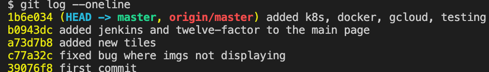
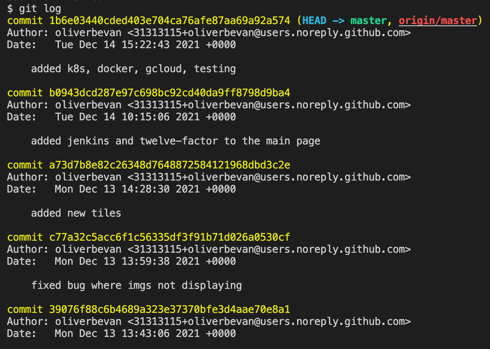

Git - Source Control
Git is a free and open source distributed version control system designed to handle everything from small to very large projects with speed and efficiency.

One the course we learn how to use git from the very basics, cloning, branching, forking, merging and reverting.
One of the most useful things I learnt on the course is the use of the --one-line flag on the git log command, which shows you all the commit each on their own line, used like so:
Which is alot easier to read that the standard git log output:
